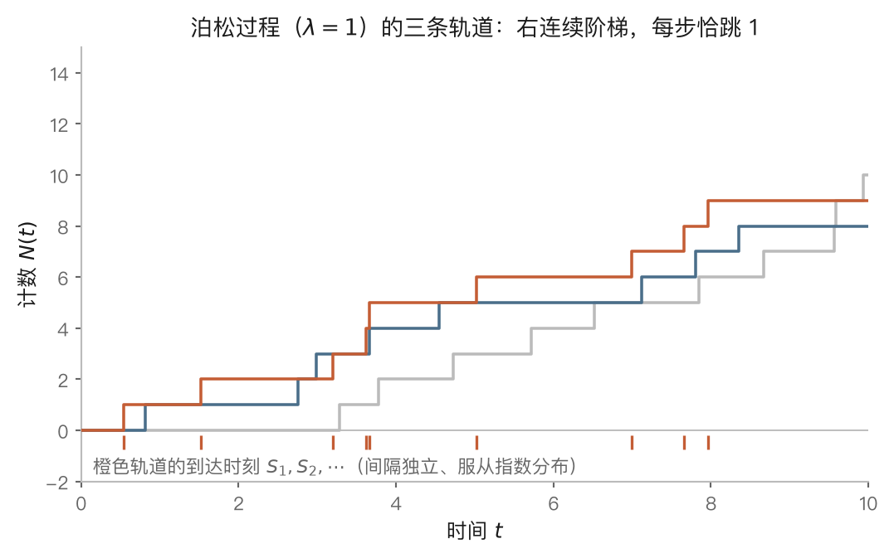
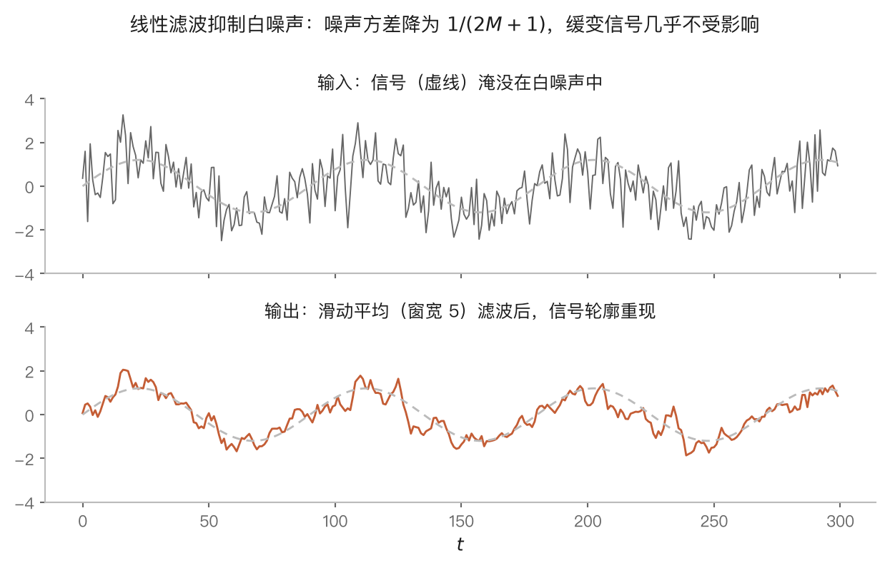

随机过程简介
📖 本章导读
这是全书的最后一章，也是一扇朝向后续课程的门。原书对本章的处理是"简介"性质的——定义与基本定理俱全，但推导从简、动机极少。本讲义按同样的节号展开，重点补足三件事：每一类过程为什么这样定义、各定理的证明思路、以及三种模型分别代表哪一种"依赖结构"。
6.0 导言：当随机变量随时间演化
前五章的研究对象，本质上是有限个随机变量：单个随机变量的分布（第二章）、随机向量的联合分布（第三章）、数字特征（第四章）、以及一列随机变量之和的极限行为（第五章）。第五章虽然涉及无穷序列 $\{X_n\}$，但那里的序列几乎总被假定为独立的——独立性使得序列没有"内部结构"，我们关心的只是求和的宏观规律。
然而现实中大量随机现象天然是随时间演化的，且前后相互关联：某时刻之前到达的顾客数、粒子在直线上的随机运动、逐日记录的气温或汇率。描述这类现象需要一族以时间为指标的随机变量
$$ \{X_t \mid t \in T\}, $$
其中 $T$ 是时间指标集——$T$ 为连续区间（如 $[0, \infty)$）时称为随机过程，$T$ 为整数集时称为随机序列或时间序列。所有这些随机变量都定义在同一个概率空间 $(\Omega, \mathcal{F}, P)$ 上；对固定的 $\omega \in \Omega$，函数 $t \mapsto X_t(\omega)$ 称为过程的一次实现或一条轨道。这个视角的转换值得体会：随机过程既可以看成"一族随机变量"（固定 $t$，看 $X_t$ 的分布），也可以看成"一个随机的函数"（固定 $\omega$，看整条轨道）——两种读法在本章将交替使用。
一旦允许随机变量之间相关，核心问题就变成：**用什么方式刻画"依赖结构"？**完全一般的依赖无法研究，必须提出既有现实覆盖面、又在数学上可驾驭的结构性假设。本章的三个模型恰好代表三种经典答案：
- 泊松过程（§6.1）：不相交时间段上的增量相互独立——依赖被压缩到最低限度，独立性以"增量"的形式保留；
- 马尔可夫链（§6.2）：将来只通过现在依赖于历史——"给定现在，将来与过去条件独立"；
- 平稳序列（§6.3–§6.4）：允许任意相关，但要求相关结构不随时间平移改变——以时间上的均匀性换取统计推断的可能。
三种结构分别是随机过程论、马尔可夫理论与时间序列分析这三门后续课程的起点。本章各节的定理证明大多只使用第一章的条件概率工具与第四章的期望运算，是对全书基本功的一次综合检验。
- 随机过程 = 以时间为指标的一族随机变量 = 一个随机的函数；固定 $\omega$ 得轨道，固定 $t$ 得随机变量。
- 研究随机过程的关键是对依赖结构做结构性假设。
- 三个模型三种结构：泊松过程（独立增量）、马氏链（一步依赖）、平稳序列（相关结构平移不变）。
6.1 泊松过程：完全随机的事件流
对应原书 §6.1。
A. 计数过程：事件流的数学载体
许多应用问题的原始形态是一串在随机时刻发生的事件："事件流"：进入校门的汽车、到达的手机短信、商场收到的投诉。刻画事件流最自然的方式，是引入计数过程
$$ N(t) = [0, t] \text{ 内事件发生的个数}, \qquad t \geq 0. $$
由含义可直接读出计数过程的四条结构性质：$N(t)$ 取非负整数值；关于 $t$ 单调不减；$N(t) - N(s)$（$t > s$）恰为时间段 $(s, t]$ 内的事件数；每条轨道 $t \mapsto N(t, \omega)$ 是单调不减、右连续的阶梯函数——事件每发生一次，轨道向上跳一格。"增量 $N(t) - N(s)$ 计数 $(s,t]$ 内的事件"这一读法是本节一切推理的出发点。

计数过程过于宽泛，需要进一步的结构假设。两条最自然的假设是：
独立增量性：互不相交的时间段内发生的事件个数相互独立。形式化表述：对任何 $0 < t_1 < \cdots < t_n$，增量
$$ N(t_1) - N(0), \; N(t_2) - N(t_1), \; \cdots, \; N(t_n) - N(t_{n-1}) $$
相互独立。物理含义：过去一段时间事件的多寡，不影响未来时间段的事件数——事件流"没有记忆、没有惯性"。
平稳增量性：长度相等的时间段内，事件个数的分布相同，即 $N(t_2) - N(t_1)$ 与 $N(t_2 + s) - N(t_1 + s)$ 同分布。物理含义：事件流的统计规律不随时间推移而改变——没有"高峰期"与"低谷期"之分。
放射性物质在 $[0,t]$ 内放射的 $\alpha$ 粒子数（原书例 1.1，呼应第二章 §2.2 例 2.1 的卢瑟福–盖革数据）同时具备这两条性质：原子核衰变彼此无关，衰变强度在观测时间尺度上恒定。
B. 泊松过程：为什么偏偏是泊松分布
定义 1.1 计数过程 $\{N(t)\}$ 称为强度 $\lambda$ 的泊松过程，若：
- $N(0) = 0$；
- $\{N(t)\}$ 具有独立增量性；
- 对任何 $t > s \geq 0$，增量 $N(t+s) - N(s)$ 服从参数 $\lambda t$ 的泊松分布：
$$ P\big(N(t+s) - N(s) = k\big) = \frac{(\lambda t)^k}{k!} \mathrm{e}^{-\lambda t}, \qquad k = 0, 1, \cdots. \tag{1.1} $$
条件 (3) 蕴含平稳增量性（增量分布只依赖区间长度 $t$）。由泊松分布的数字特征立得
$$ \mathrm{E} N(t) = \lambda t, \qquad \operatorname{var}(N(t)) = \lambda t, $$
于是 $\lambda = \mathrm{E}N(t)/t$ 是单位时间内事件发生的平均个数——这就是"强度"一词的由来。卢瑟福–盖革实验中 $7.5$ 秒内的粒子数服从 $\mathcal{P}(3.87)$，故该泊松过程的强度为 $\lambda = 3.87/7.5 = 0.516$（个/秒）。
初学者应当追问：条件 (3) 中的泊松分布是从哪里来的？为什么"完全随机的事件流"必然导致泊松分布，而不是别的分布？原书给出的回答是等价的无穷小定义：
定义 1.2 计数过程 $\{N(t)\}$ 称为强度 $\lambda$ 的泊松过程，若 $N(0) = 0$、具有独立增量性，且当 $h \to 0^+$ 时
$$ \begin{cases} P\big(N(t+h) - N(t) = 1\big) = \lambda h + o(h), \\ P\big(N(t+h) - N(t) \geq 2\big) = o(h). \end{cases} \tag{1.2} $$
定义 1.2 中不再出现任何具体分布，只有两条关于"微小时间段"的定性假设：极短时间内恰发生一件事的概率与时长成正比（比例系数即强度 $\lambda$），同时发生两件及以上的概率是高阶无穷小。第二条意味着事件"一件一件地"发生，轨道的跳跃高度几乎必然为 1；(1.2) 只依赖时长 $h$ 而与起点 $t$ 无关，平稳增量性即蕴含其中。
定义 1.1 与定义 1.2 的等价性（原书略去证明）可以用第二章的泊松定理看得很透彻，这一论证值得完整领会。将 $(0, t]$ 等分为 $n$ 个长度 $t/n$ 的小段。由 (1.2)，每小段内"至少发生一件事"的概率约为 $\lambda t/n$，"发生两件以上"的概率可忽略；由独立增量性，各小段的情况相互独立。于是 $N(t)$ 近似等于 $n$ 重伯努利试验中的成功次数，即
$$ N(t) \approx B\Big(n, \; \frac{\lambda t}{n}\Big). $$
令 $n \to \infty$，由泊松定理（二项分布在 $np \to \lambda t$ 时收敛于泊松分布），$N(t)$ 的分布收敛于 $\mathcal{P}(\lambda t)$。泊松分布不是被假设出来的，而是"独立 + 均匀 + 一件一件发生"这三条定性假设的必然结论——这正是泊松分布在第二章被称为"描述稀有事件"的深层原因，也解释了它在电话呼叫、放射性衰变、交通流等毫不相干的领域反复出现的普遍性。实际判断一个计数过程是否为泊松过程时，验证定义 1.2 的三条定性假设远比直接验证泊松分布容易，这是原书强调定义 1.2 "更有效"的原因。
C. 到达时刻的分布：从计数看时间
泊松过程有两套互相对偶的观察方式：固定时间问"到时刻 $t$ 为止发生了几件事"（计数视角，即 $N(t)$）；固定件数问"第 $n$ 件事发生在什么时刻"（时间视角）。用 $S_n$ 表示第 $n$ 个事件发生的时刻（第 $n$ 个到达时刻，约定 $S_0 = 0$），两套视角由以下基本关系相互翻译：
$$ \{N(t) \geq n\} = \{S_n \leq t\}, \qquad \{N(t) = n\} = \{S_n \leq t < S_{n+1}\}. \tag{1.3} $$
第一式的读法："到 $t$ 为止已发生至少 $n$ 件事"当且仅当"第 $n$ 件事的到达不晚于 $t$"。这类恒等式是处理一切计数过程的枢纽：它把关于随机时刻 $S_n$ 的问题转化为关于计数 $N(t)$ 的问题，而后者的分布是已知的。
由 (1.3) 立即得到 $S_n$ 的分布函数：
$$ F_n(t) = P(S_n \leq t) = P(N(t) \geq n) = 1 - \sum_{k=0}^{n-1} \frac{(\lambda t)^k}{k!} \mathrm{e}^{-\lambda t}. \tag{1.4} $$
对 $t$ 求导。求导时和式中相邻项发生系统性相消（第 $k$ 项对 $t$ 求导产生两部分，其一恰与第 $k-1$ 项的另一部分抵消），最终只剩一项：
$$ f_n(t) = \frac{(\lambda t)^{n-1}}{(n-1)!} \lambda \mathrm{e}^{-\lambda t} = \frac{\lambda^n}{\Gamma(n)} t^{n-1} \mathrm{e}^{-\lambda t}, \qquad t \geq 0. \tag{1.5} $$
即 $S_n \sim \Gamma(n, \lambda)$——第二章 §2.3 引入的 $\Gamma$ 分布在此获得了它最重要的概率解释：$\Gamma(n, \lambda)$ 是强度 $\lambda$ 的泊松流中第 $n$ 个事件的到达时刻的分布。
D. 等待时间的分布：三位一体的完成
相邻到达时刻之差
$$ X_n = S_n - S_{n-1}, \qquad n = 1, 2, \cdots $$
是第 $n-1$ 个事件之后等待第 $n$ 个事件的等待时间。
定理 1.1 泊松过程的等待时间 $X_1, X_2, \cdots$ 相互独立，且都服从指数分布 $\mathcal{E}(\lambda)$。
原书未给证明，这里至少把最关键的两步补出。其一，$X_1$ 的分布可直接计算：
$$ P(X_1 > t) = P\big([0,t] \text{ 内无事件}\big) = P(N(t) = 0) = \mathrm{e}^{-\lambda t}, $$
这正是指数分布 $\mathcal{E}(\lambda)$ 的生存函数。其二，独立性与同分布性来自独立增量性：给定 $S_1 = s$，过程在 $s$ 之后的演化只涉及 $(s, \infty)$ 上的增量，与 $[0, s]$ 上的历史独立且统计规律相同——过程在每个到达时刻"重新开始"。逐次应用此论证即得 $X_1, X_2, \cdots$ 独立同分布。
至此形成一个漂亮的三位一体，三个第二章的著名分布在同一个模型中各司其职：
$$ \text{计数 } N(t) \sim \mathcal{P}(\lambda t) \quad \Longleftrightarrow \quad \text{等待 } X_i \overset{\text{iid}}{\sim} \mathcal{E}(\lambda) \quad \Longleftrightarrow \quad \text{到达 } S_n = X_1 + \cdots + X_n \sim \Gamma(n, \lambda). $$
这同时印证了第三章的卷积结果（$n$ 个独立 $\mathcal{E}(\lambda)$ 之和服从 $\Gamma(n,\lambda)$），也把指数分布的无记忆性放到了应有的位置：等待时间无记忆，恰是"事件流无记忆"（独立增量）在单个间隔上的体现。数字层面的自洽验证：$\mathrm{E}X_i = 1/\lambda$ 为平均等待时间，故
$$ [0,t] \text{ 内平均发生的事件数} = \lambda t = \frac{t}{1/\lambda} = \frac{\text{时间长度}}{\text{平均等待时间}}, $$
符合直觉。反向的结论同样成立且极有用（习题 6.3、6.5 的原理）：若事件的间隔为独立同分布的 $\mathcal{E}(\lambda)$，则计数过程必为强度 $\lambda$ 的泊松过程。
- 计数过程的轨道是单调不减右连续的阶梯函数；增量 $N(t)-N(s)$ 计数 $(s,t]$ 内的事件。
- 泊松过程 = 独立增量 + $N(0)=0$ + 增量服从 $\mathcal{P}(\lambda t)$；等价的无穷小刻画 (1.2)：单事件概率 $\lambda h + o(h)$、多事件概率 $o(h)$。
- 泊松分布是"独立、均匀、逐件发生"的必然结论：分段 + 二项逼近 + 泊松定理。
- 枢纽恒等式 $\{N(t) \geq n\} = \{S_n \leq t\}$ 沟通计数视角与时间视角。
- 三位一体：计数 $\mathcal{P}(\lambda t)$、等待 iid $\mathcal{E}(\lambda)$、到达 $\Gamma(n,\lambda)$；指数无记忆性 = 独立增量性的单间隔体现。
6.2 马尔可夫链：只保留"现在"的依赖
对应原书 §6.2。
A. 马氏性：给定现在，将来与过去条件独立
泊松过程把依赖压缩到零（增量完全独立）。马尔可夫链保留一种最经济的依赖：将来可以依赖现在，但给定现在之后，将来与更早的历史无关。
设随机序列 $\{X_n \mid n = 0, 1, \cdots\}$ 在有限或可列的状态空间 $I$ 中取值（状态用整数编号，以 $i, j, k$ 等表示）。
定义 2.1 若对任何正整数 $n$ 及状态 $i_0, \cdots, i_{n-1}, i, j$，
$$ P(X_{n+1} = j \mid X_n = i, X_{n-1} = i_{n-1}, \cdots, X_0 = i_0) = P(X_{n+1} = j \mid X_n = i) = P(X_1 = j \mid X_0 = i), \tag{2.1} $$
则称 $\{X_n\}$ 为时齐马尔可夫链（简称马氏链）。称
$$ p_{ij} = P(X_1 = j \mid X_0 = i) $$
为转移概率，矩阵 $\mathbf{P} = (p_{ij})_{i,j \in I}$ 为转移概率矩阵。
定义 (2.1) 实际上包含两条独立的假设，初学时应当分开理解：第一个等号是马氏性——条件概率中，早于时刻 $n$ 的历史可以整体删去；第二个等号是时齐性——转移规律不随时刻 $n$ 改变（只满足第一个等号的链称为非齐次马氏链，原书注）。转移矩阵有一条显然而重要的结构性质：每行元素之和为 1（从状态 $i$ 出发，下一步必到达某个状态），这样的矩阵称为随机矩阵。
"给定现在，将来与过去独立"这句直观表述的精确含义由下述定理澄清，其证明只用第一章的条件概率公式，却值得逐行读懂：
定理 2.1 设 $P(AB) > 0$，则以下两条件等价：
$$ P(C \mid BA) = P(C \mid B) \tag{2.2} $$
$$ P(AC \mid B) = P(A \mid B) \, P(C \mid B). \tag{2.3} $$
(2.3) 说的是：在条件概率测度 $P_B(\cdot) = P(\cdot \mid B)$ 之下，$A$ 与 $C$ 独立——即条件独立。证明是两次机械的展开：由 (2.2)，
$$ P(AC \mid B) = \frac{P(CBA)}{P(B)} = \frac{P(C \mid BA) P(BA)}{P(B)} = P(C \mid B) P(A \mid B); $$
反之由 (2.3)，
$$ P(C \mid AB) = \frac{P(ABC)/P(B)}{P(AB)/P(B)} = \frac{P(A \mid B) P(C \mid B)}{P(A \mid B)} = P(C \mid B). $$
取 $B = \{X_n = i\}$（现在）、$A = \{X_{n+1} = j\}$（将来）、$C = \{X_{n-1} = i_{n-1}, \cdots, X_0 = i_0\}$（过去），(2.2) 就是定义 (2.1)，而 (2.3) 就是"给定现在，将来与过去条件独立"。注意条件独立与（无条件）独立互不蕴含：将来与过去本身通常高度相关（今天的状态携带昨天的信息），马氏性断言的是这种相关完全经由现在传递——一旦现在已知，过去便不再提供任何额外信息。原书定理 2.2 进一步把这一性质扩充到"将来看多步、过去取集合"的一般形式（证明即习题 6.7–6.10，是条件概率全概率公式 (2.5) 的反复应用）。
三个例子展示了马氏链建模的弹性，它们共享同一套"游动"语言，仅在边界行为上不同：
- 例 2.1（简单随机游动）：质点在整数点上，每步以概率 $p$ 右移、$q = 1-p$ 左移。$p_{i, i+1} = p$，$p_{i, i-1} = q$。下一步只取决于当前位置，与来路无关——马氏性的原型。
- 例 2.2（吸收壁）：在 $\{0, 1, \cdots, n\}$ 上游动，到达 $0$ 或 $n$ 后永远停留（$p_{00} = p_{nn} = 1$）。这正是第一章赌徒破产模型的马氏链表述：本金即状态，输光（$0$）与赢足（$n$）是两个吸收态；第一章的"首步分析法"，本质上就是对这条马氏链用全概率公式按第一步转移分解。
- 例 2.3（反射壁）：到达边界后必然弹回（$p_{01} = p_{n, n-1} = 1$）。
同一游动规则，边界条件不同，长期行为迥异（吸收链终将停止，反射链永远运动）——这提示状态的分类与长期行为是马氏链理论的中心问题，属于后续课程的内容。
B. Kolmogorov–Chapman 方程：演化归结为矩阵幂
一步转移由 $\mathbf{P}$ 描述，自然要问 $k$ 步转移。由时齐性（定理 2.2(1)），$P(X_{n+k} = j \mid X_n = i)$ 与 $n$ 无关，故可定义 $k$ 步转移概率
$$ p_{ij}^{(k)} = P(X_k = j \mid X_0 = i), \qquad \mathbf{P}^{(k)} = \big(p_{ij}^{(k)}\big), $$
约定 $\mathbf{P}^{(1)} = \mathbf{P}$，$\mathbf{P}^{(0)} = $ 单位阵。
定理 2.3（K-C 方程） 对任何 $m, n \geq 0$，
$$ p_{ij}^{(n+m)} = \sum_{k \in I} p_{ik}^{(m)} \, p_{kj}^{(n)}, \qquad \mathbf{P}^{(n+m)} = \mathbf{P}^{n+m}. $$
第一式的含义一目了然：从 $i$ 出发经 $m+n$ 步到达 $j$，必在第 $m$ 步途经某个中间状态 $k$；对一切可能的 $k$ 分解求和。证明就是把这句话写成公式——以 $\{X_0 = i\}$ 为条件用全概率公式按 $X_m$ 的取值分解，再用马氏性把 $P(X_{n+m} = j \mid X_m = k, X_0 = i)$ 中的历史 $\{X_0 = i\}$ 删去：
$$ p_{ij}^{(n+m)} = \sum_{k \in I} P(X_{n+m} = j \mid X_m = k, X_0 = i) \, P(X_m = k \mid X_0 = i) = \sum_{k \in I} p_{kj}^{(n)} \, p_{ik}^{(m)}. $$
而这个求和式恰是矩阵乘法的定义，故 $\mathbf{P}^{(n+m)} = \mathbf{P}^{(n)} \mathbf{P}^{(m)}$，递推即得 $\mathbf{P}^{(k)} = \mathbf{P}^k$。这是本节的中心结论：马氏链的全部多步演化规律，都封装在一步转移矩阵的幂之中——概率演化问题就此转化为线性代数问题。
分布层面的对应结论是定理 2.4。设初始分布 $\boldsymbol{\pi}(0) = (p_0, p_1, \cdots)$（$p_j = P(X_0 = j)$，排成行向量），$\boldsymbol{\pi}(n)$ 为 $X_n$ 的分布，则全概率公式给出
$$ \boldsymbol{\pi}(n) = \boldsymbol{\pi}(n-1) \, \mathbf{P} = \boldsymbol{\pi}(0) \, \mathbf{P}^n. $$
即：初始分布与转移矩阵完全决定链在任意时刻的分布。行向量右乘矩阵的约定与"行和为 1"相配合——分布沿矩阵的行"流动"。
一个便于直观检验的补充例（原书无，规模最小的非平凡情形）：状态空间 $\{$晴, 雨$\}$，转移矩阵
$$ \mathbf{P} = \begin{pmatrix} 0.8 & 0.2 \\ 0.4 & 0.6 \end{pmatrix} $$
（晴之后 8 成仍晴，雨之后 6 成仍雨）。若今日为晴，$\boldsymbol{\pi}(0) = (1, 0)$，则两日后的分布为 $\boldsymbol{\pi}(2) = \boldsymbol{\pi}(0)\mathbf{P}^2 = (0.72, 0.28)$。继续迭代可见 $\boldsymbol{\pi}(n)$ 趋于 $(2/3, 1/3)$——一个满足 $\boldsymbol{\pi} \mathbf{P} = \boldsymbol{\pi}$ 的不动点分布，且与初始分布无关。这类"平稳分布"与收敛性问题（何种条件下极限存在、唯一）正是马氏链理论第二幕的主题，留待随机过程课程展开。
- 马氏链定义含两条假设：马氏性（删去早于现在的历史）与时齐性（转移规律不随时间变）。
- 马氏性的准确表述是条件独立：在 $P(\cdot \mid X_n = i)$ 之下，将来与过去独立（定理 2.1）；条件独立 ≠ 独立。
- 转移矩阵行和为 1；吸收壁随机游动即第一章的赌徒破产模型。
- K-C 方程：按中间时刻的状态全概率分解 + 马氏性；矩阵形式 $\mathbf{P}^{(k)} = \mathbf{P}^k$，$\boldsymbol{\pi}(n) = \boldsymbol{\pi}(0)\mathbf{P}^n$——演化问题化为矩阵幂。
6.3 时间序列：用相关结构研究随机序列
对应原书 §6.3。
A. 平稳序列与自协方差函数
按时间次序排列的随机变量序列 $X_1, X_2, \cdots$ 称为时间序列。气温、汇率、信号采样值都是其观测形态。时间序列分析面对一个与前几章截然不同的困境：观测通常不可重复。掷骰子可以重复一万次以估计分布；但 2026 年 7 月的汇率序列只此一份，无法"重来一次"。要想从单独一条数据中推断统计规律，必须假设序列的统计性质不随时间改变——这样，序列在不同时段的片段才能充当"重复观测"的替身。平稳性假设正是为此而生。
第四章的经验（分布难求而数字特征易得）提示先从二阶矩层面提要求。设时间指标 $t$ 取遍全体整数或全体正整数：
定义 3.1 时间序列 $\{X_t\}$ 称为平稳序列，若：
- 二阶矩有限：$\mathrm{E} X_t^2 < \infty$；
- 均值为常数：$\mathrm{E} X_t = \mu$，与 $t$ 无关；
- 协方差只依赖时间差：$\mathrm{E}[(X_t - \mu)(X_s - \mu)] = \gamma_{t-s}$。
数列 $\{\gamma_k\}$ 称为 $\{X_t\}$ 的自协方差函数。
条件 (3) 是定义的灵魂：任取两个时刻，其协方差只由间隔决定，即对任何平移步长 $k$，
$$ \operatorname{cov}(X_t, X_s) = \operatorname{cov}(X_{t+k}, X_{s+k}) = \gamma_{s-t} $$
——协方差结构具有平移不变性。由此每个 $X_t$ 有相同的均值 $\mu$ 与相同的方差 $\gamma_0 = \operatorname{var}(X_t)$（取 $t = s$）。因为定义只约束一、二阶矩，平稳序列又称二阶矩平稳序列（与 §6.4 的严平稳相区别）。此后总设 $\gamma_0 > 0$：若 $\gamma_0 = 0$，由第四章的结论（方差为零的随机变量以概率 1 等于其均值），整个序列恒为常数 $\mu$，无分析价值。
自协方差函数是平稳序列分析的核心工具，其三条基本性质各有清晰来源：
- 对称性 $\gamma_k = \gamma_{-k}$：协方差关于两个变元对称，$\operatorname{cov}(X_{t+k}, X_t) = \operatorname{cov}(X_t, X_{t+k})$；
- 非负定性：$n$ 阶自协方差矩阵 $\Gamma_n = (\gamma_{k-j})_{k,j=1}^n$ 非负定。缘由是第四章协方差矩阵的普遍性质：对任何实数 $c_1, \cdots, c_n$，
$$ \sum_{k,j=1}^{n} c_k c_j \gamma_{k-j} = \operatorname{var}\Big(\sum_{j=1}^{n} c_j X_j\Big) \geq 0 $$
——方差非负这一朴素事实的矩阵表述；
- 有界性 $|\gamma_k| \leq \gamma_0$：Cauchy–Schwarz 不等式 $|\operatorname{cov}(X_{t+k}, X_t)| \leq \sqrt{\operatorname{var} X_{t+k}} \sqrt{\operatorname{var} X_t} = \gamma_0$。
满足这三条的实数列称为非负定序列。深刻的是逆命题也成立（原书引注）：每个非负定序列都是某个平稳序列的自协方差函数——三条性质不多不少，恰好刻画了自协方差函数的全体。
**例 3.1（调和平稳序列）**破除一个常见误解。设 $U$ 在 $(-\pi, \pi)$ 内均匀分布，
$$ X_t = b \cos(at + U). $$
这是频率确定、相位随机的余弦波。对 $U$ 积分（第四章随机变量函数的期望）：
$$ \mathrm{E} X_t = \frac{1}{2\pi} \int_{-\pi}^{\pi} b\cos(at + u) \, \mathrm{d}u = 0, $$
$$ \mathrm{E}(X_t X_s) = \frac{b^2}{2\pi} \int_{-\pi}^{\pi} \cos(at+u)\cos(as+u) \, \mathrm{d}u = \frac{b^2}{2} \cos\big(a(t-s)\big) $$
（积化和差后，含 $2u$ 的项在整周期上积分为零）。均值恒为零、协方差只依赖 $t - s$：$\{X_t\}$ 是平稳序列，且 $\gamma_k = \frac{b^2}{2}\cos(ak)$ 呈周期振荡。平稳性与周期性并不矛盾——平稳要求的是统计规律（均值、相关结构）的平移不变，而非轨道本身单调乏味；随机的仅仅是相位。
B. 白噪声：相关结构最简单的平稳序列
定义 3.2 平稳序列 $\{\varepsilon_t\}$ 称为白噪声，记作 $\mathrm{WN}(\mu, \sigma^2)$，若
$$ \mathrm{E}\varepsilon_t = \mu, \qquad \operatorname{cov}(\varepsilon_t, \varepsilon_s) = \begin{cases} \sigma^2, & t = s, \\ 0, & t \neq s. \end{cases} $$
即自协方差函数为 $\gamma_0 = \sigma^2$、$\gamma_k = 0 \ (k \neq 0)$——不同时刻两两不相关。在二阶矩的观测精度下，白噪声是"最无结构"的序列：知道过去的取值，对预测将来（线性意义下）毫无帮助。"白"字来源于光学类比：白光是所有频率成分等强度的混合，白噪声在频域上同样各频率等强度——这一谱观点属于时间序列课程，此处仅作名称注解。两点辨析：其一，独立同分布且方差有限的序列必为白噪声，但白噪声只要求不相关，不要求独立（第四章：独立 $\Rightarrow$ 不相关，反之不然）；其二，白噪声在时间序列理论中扮演"原材料"的角色——下文 C 段的构造将说明，大量平稳序列都可由白噪声线性叠加而成。
原书例 3.2 借此引入一个重要过程：满足 $X_0 = 0$、独立增量、且 $X_t - X_s \sim N(0, t-s)$ 的连续时间过程称为标准布朗运动——与泊松过程同为独立增量过程，但增量分布由泊松换成正态，轨道由阶梯跳跃变为连续震荡。其单位时间增量 $\varepsilon_n = X_{n+1} - X_n$ 构成标准正态白噪声（独立增量保证不相关，$N(0,1)$ 保证同分布）。布朗运动是随机分析与金融数学的基石，在本书中仅此惊鸿一瞥。
C. 线性平稳序列：由白噪声叠加而成
以零均值白噪声 $\{\varepsilon_t\}$ 为原料、平方可和的实数列 $\{a_j\}$（$\sum_j a_j^2 < \infty$）为权，构造无穷滑动和
$$ X_t = \sum_{j=-\infty}^{\infty} a_j \varepsilon_{t-j}. $$
可以证明 $\{X_t\}$ 是平稳序列，称为线性平稳序列，其自协方差函数为
$$ \gamma_k = \sigma^2 \sum_{j=-\infty}^{\infty} a_j a_{j+k}. $$
该公式的来历值得亲手推一遍（对期望与无穷和交换次序的合法性不作深究）：
$$ \operatorname{cov}(X_{t+k}, X_t) = \sum_{i}\sum_{j} a_i a_j \operatorname{cov}(\varepsilon_{t+k-i}, \varepsilon_{t-j}), $$
由白噪声的不相关性，仅当下标相等（$t+k-i = t-j$，即 $i = j+k$）时协方差非零且等于 $\sigma^2$，双重求和坍缩为单重：$\gamma_k = \sigma^2 \sum_j a_{j+k} a_j$。结果只依赖 $k$，平稳性得证。记忆的机制在系数中：$X_{t+k}$ 与 $X_t$ 相关，是因为二者的表达式中含有共同的白噪声项；权重 $\{a_j\}$ 衰减越慢，序列的记忆越长。
应用中最常见的是单边滑动和 $X_t = \sum_{j=0}^{\infty} a_j \varepsilon_{t-j}$：当前观测只由现在及过去的噪声构成、不受未来影响——因果性的数学表述。原书还指出线性平稳序列的覆盖面：只要样本自协方差函数随滞后阶数趋于零（实际数据大多如此），该序列就可用线性平稳序列描述，这是时间序列分析以线性模型为主干的经验依据。习题 6.11 的 AR(1) 方程 $X_n = aX_{n-1} + \varepsilon_n$（$|a| < 1$）是最重要的具体实例：反复迭代可得 $X_n = \sum_{j=0}^{\infty} a^j \varepsilon_{n-j}$，恰为几何衰减权重的单边滑动和。
D. 线性滤波：加权平均如何抑制噪声
信号处理中，时间序列 $\{X_t\}$ 称为信号过程。绝对可和的实数列 $H = \{h_j\}$ 称为一个保时线性滤波器，信号通过滤波器后输出
$$ Y_t = \sum_{j=-\infty}^{\infty} h_j X_{t-j}. \tag{3.1} $$
若输入平稳（均值 $\mu$、自协方差 $\{\gamma_k\}$），则输出仍平稳，且
$$ \mu_Y = \mu \sum_j h_j, \qquad \gamma_Y(n) = \sum_{j,k} h_j h_k \gamma_{n+k-j} $$
（推导与 C 段同型：双线性展开）。平稳性在线性滤波下保持，这是"保时"二字的含义之一。
最简单的滤波器是逐步平均：取
$$ h_j = \frac{1}{2M+1} \ (|j| \leq M), \qquad h_j = 0 \ (|j| > M), \tag{3.2} $$
即 $Y_t$ 为 $X_t$ 前后共 $2M+1$ 项的算术平均。它为何能抑制高频噪声？**例 3.3（余弦波信号的滤波）**给出定量答案。设观测信号为余弦波与噪声的叠加：
$$ X_t = b\cos(\omega t + U) + \varepsilon_t, $$
信号强弱以方差 $b^2/2$ 度量（例 3.1），噪声强弱以 $\sigma^2 = \operatorname{var}(\varepsilon_t)$ 度量，二者之比
$$ \text{信噪比} = \frac{b^2}{2\sigma^2} $$
刻画信号被识别的难易。对 $X_t$ 施行逐步平均，利用 $\sum_{j=-M}^{M} \cos(\omega(t-j)+U) = \big[\sum_{j=-M}^{M} \cos(\omega j)\big] \cos(\omega t + U)$（正弦项按 $j \mapsto -j$ 对称相消），输出为
$$ Y_t = c \cdot b\cos(\omega t + U) + \eta_t, \qquad c = \frac{1}{2M+1}\sum_{j=-M}^{M} \cos(\omega j), \qquad \eta_t = \frac{1}{2M+1}\sum_{j=-M}^{M} \varepsilon_{t-j}. $$
两个成分的命运截然不同。信号成分仍是同频率的余弦波，仅振幅乘以因子 $c$：当 $\omega$ 较小（低频）时窗口内各项近似同相，$c$ 接近 1，信号大体保留。噪声成分被平均削弱：若 $\{\varepsilon_t\}$ 为白噪声，由不相关性 $\operatorname{var}(\eta_t) = \sigma^2/(2M+1)$——方差按窗宽倒数缩小。这正是第五章大数律思想的局部应用：不相关随机项的平均衰减，而相干信号的平均不衰减。原书数值实验（$b = 1.5$，$\omega = \pi/7$，$M = 3$，正态白噪声）中，输出信噪比为输入的 $2.884$ 倍——按上述公式验证：$c = \frac{1}{7}\sum_{j=-3}^{3}\cos(\pi j/7) \approx 0.642$，信噪比放大倍数 $c^2 (2M+1) \approx 0.642^2 \times 7 \approx 2.88$，与原书一致。

- 平稳序列：均值常数、协方差只依赖时间差；平稳性假设使"单条数据做统计推断"成为可能。
- 自协方差函数三性质：对称、非负定（方差非负的矩阵化）、$|\gamma_k| \leq \gamma_0$（Cauchy–Schwarz）；三条恰好刻画其全体。
- 平稳可以有周期（随机相位余弦波）；白噪声 = 两两不相关的平稳序列，"不相关"弱于"独立"。
- 线性平稳序列 $X_t = \sum a_j \varepsilon_{t-j}$：记忆藏在权重中，$\gamma_k = \sigma^2 \sum_j a_j a_{j+k}$；AR(1) 是几何权重特例。
- 滤波抑噪的原理：不相关噪声经平均方差缩为 $1/(2M+1)$，低频相干信号近乎无损——大数律思想的信号处理形态。
6.4 严平稳序列：分布层面的平移不变
对应原书 §6.4。
宽与严：两种平稳性的关系
§6.3 的平稳性只约束一、二阶矩。若把平移不变性提升到整个联合分布的层面，就得到更强的概念。先约定：两个时间序列同分布，指其一切同位置有限维随机向量同分布。
定义 4.1 时间序列 $\{X_t\}$ 称为严平稳序列，若对任何正整数 $n$ 与任何平移步长 $k$，
$$ (X_1, X_2, \cdots, X_n) \quad \text{与} \quad (X_{1+k}, X_{2+k}, \cdots, X_{n+k}) $$
同分布。
即：序列的所有有限维联合分布平移不变——不只均值与协方差，任何用分布表达的统计性质（各阶矩、分位数、任意事件的概率）都不随时间推移改变。严平稳性有一条极有用的封闭性（原书 (4.1)，证明即习题 6.15）：对任何 $m$ 元函数 $\phi$，
$$ Y_t = \phi(X_{t+1}, X_{t+2}, \cdots, X_{t+m}) $$
仍是严平稳序列——严平稳性在对轨道的"滑动窗口加工"下保持。这条性质是下文遍历定理得以广泛应用的杠杆。
两种平稳性的关系需要仔细陈述：
- 严 $\Rightarrow$ 宽（在二阶矩有限时）：均值与协方差都由联合分布决定，联合分布平移不变则它们平移不变。注意前提"$\operatorname{var}(X_t)$ 有限"不可省——严平稳序列的二阶矩可以不存在（例如各 $X_t$ 独立同 Cauchy 分布）。
- 宽 $\nRightarrow$ 严：宽平稳只看到一、二阶矩，三阶以上的结构完全可以随时间改变。为强调区别，平稳序列又称弱平稳或宽平稳序列，严平稳序列又称强平稳序列。
- 正态序列上两者等价：正态随机向量的联合分布由均值向量与协方差矩阵唯一决定（第五章 §5.3），故对正态时间序列，一、二阶矩的平移不变已足以锁定全部有限维分布的平移不变。这是"正态假设大幅简化理论"的又一实例。
遍历性：一条轨道何以代表整个分布
本节最后讨论一个源头性的问题。A 段说过，时间序列的观测不可重复——我们只拥有 $\{X_t\}$ 的一次实现 $x_1, x_2, \cdots$。概率论中一切"期望""分布"都是对样本空间 $\Omega$ 的平均（想象平行地重复无穷次），单独一条轨道凭什么能推断它们？
遍历性正是弥合这道鸿沟的假设。原书刻意不给出其数学定义（需要更深的测度论工具），只陈述使用层面的结论：严平稳且遍历的序列（严平稳遍历序列）满足
定理 4.1 设 $\{X_t\}$ 是严平稳遍历序列，则：
- 强大数律：若 $\mathrm{E}|X_1| < \infty$，则
$$ \lim_{n \to \infty} \frac{1}{n} \sum_{t=1}^{n} X_t = \mathrm{E} X_1, \qquad \text{a.s.}; $$
- 对任何多元函数 $\phi$，$Y_t = \phi(X_{t+1}, \cdots, X_{t+m})$ 仍是严平稳遍历序列。
结论 (1) 是第五章强大数律从"独立同分布"向"相依但严平稳遍历"的推广：时间平均几乎必然收敛于总体期望——沿一条轨道向后看得足够久，与在同一时刻横跨无穷多平行世界取平均，殊途同归。结论 (2) 则把这条大数律的适用范围指数式放大：既然滑动窗口加工保持严平稳遍历性，就可以对轨道的各种函数反复应用 (1)。
原书两个例子演示了这个杠杆的力量。例 4.1：取 $\phi$ 为示性函数，$Y_t = \mathrm{I}[X_{t+1} \leq y_1, \cdots, X_{t+m} \leq y_m]$，则 $\{Y_t\}$ 严平稳遍历且有界，(1) 给出
$$ \lim_{n \to \infty} \frac{1}{n}\sum_{t=1}^{n} Y_t = \mathrm{E}Y_1 = P(X_1 \leq y_1, \cdots, X_m \leq y_m), \quad \text{a.s.} $$
左端是可以从一条轨道数出来的频率（窗口沿轨道滑动，统计落入给定区域的比例），右端是 $m$ 维联合分布函数——一次实现几乎必然决定序列的全部有限维分布。这为"从单条历史数据估计分布"提供了理论许可，是整个时间序列统计的合法性来源。例 4.2 同理：$\{X_t X_{t+k}\}$ 严平稳遍历，时间平均 $\frac{1}{N}\sum_t X_t X_{t+k}$ 几乎必然收敛于 $\mathrm{E}(X_t X_{t+k})$——样本自协方差函数是真自协方差函数的相合估计。
哪些序列是严平稳遍历的？定理 4.2 给出应用中最重要的充分条件：以独立同分布的 $\mathrm{WN}(0, \sigma^2)$ 为原料的线性平稳序列 $X_t = \sum_j a_j \varepsilon_{t-j}$ 是严平稳遍历的。结合 §6.3C"实际平稳序列大多可用线性序列描述"的经验事实，遍历性在应用中通常是可以放心假设的。
- 严平稳 = 一切有限维联合分布平移不变；对滑动窗口函数加工封闭。
- 严（+二阶矩有限）$\Rightarrow$ 宽；宽 $\nRightarrow$ 严；正态序列上二者等价（分布由一、二阶矩决定）。
- 遍历性的意义：时间平均 = 总体平均（a.s.）——单条轨道足以推断全部有限维分布，时间序列统计因此合法。
- iid 白噪声驱动的线性平稳序列严平稳遍历（定理 4.2）。
本章收束：全书回望与去路
第六章以"简介"之名，完成了从静态概率论到动态随机过程的转场。三种模型对应三种可驾驭的依赖结构：泊松过程以独立增量刻画完全随机的事件流，其中计数、到达、等待三个视角分别由泊松、$\Gamma$、指数三个分布担纲；马尔可夫链以条件独立保留最经济的记忆，K-C 方程把演化归结为转移矩阵的幂；平稳序列以平移不变的相关结构换取从单条轨道做推断的资格，遍历定理则为这一资格提供了大数律级别的担保。
回望全书六章，是一条完整的公理化建设路径：第一章立定概率空间与条件概率、独立性的语言；第二章把随机现象数值化为随机变量及其分布；第三章处理多个随机变量的联合规律；第四章以期望、方差、协方差提取分布的数字特征；第五章借特征函数登顶两大极限定理，说明为什么正态分布与"频率稳定于概率"是大量独立随机性叠加的必然；第六章则让随机变量在时间中流动起来。就工具而言，本章的每一个证明都只用到前五章的存货——条件概率的运算、全概率公式、协方差的双线性、大数律——这正是"简介"的深意：随机过程不是另起炉灶的新学科，而是概率论公理体系的自然延伸。
由此出发的三条去路：数理统计（何书元《数理统计》为同一体系的续篇）解决本书屡次预告的反问题——从数据推断分布与参数；随机过程课程接续 §6.1–§6.2，展开马氏链的状态分类、平稳分布与收敛定理，以及布朗运动与随机分析；时间序列分析接续 §6.3–§6.4，以 ARMA 模型、谱分析与预报理论处理相依数据——那也是本书作者本人的研究领域。
公式速查卡
泊松过程（强度 $\lambda$）
- 定义：$N(0)=0$ + 独立增量 + $N(t+s)-N(s) \sim \mathcal{P}(\lambda t)$
- 无穷小刻画：$P(\Delta N = 1) = \lambda h + o(h)$，$P(\Delta N \geq 2) = o(h)$
- $\mathrm{E}N(t) = \operatorname{var}(N(t)) = \lambda t$；$\lambda$ = 单位时间平均事件数
- 对偶恒等式：$\{N(t) \geq n\} = \{S_n \leq t\}$
- 到达时刻 $S_n \sim \Gamma(n, \lambda)$，密度 $f_n(t) = \frac{\lambda^n}{(n-1)!} t^{n-1} \mathrm{e}^{-\lambda t}$
- 等待时间 $X_n = S_n - S_{n-1} \overset{\text{iid}}{\sim} \mathcal{E}(\lambda)$；$\mathrm{E}X_i = 1/\lambda$
马尔可夫链
- 马氏性 + 时齐性：$P(X_{n+1} = j \mid X_n = i, \text{历史}) = p_{ij}$
- 条件独立等价式：$P(C \mid BA) = P(C \mid B) \iff P(AC \mid B) = P(A \mid B)P(C \mid B)$
- 转移矩阵行和为 1；$k$ 步转移 $\mathbf{P}^{(k)} = \mathbf{P}^k$（K-C 方程）
- 分布演化：$\boldsymbol{\pi}(n) = \boldsymbol{\pi}(0) \mathbf{P}^n$（行向量右乘）
平稳序列
- 定义：$\mathrm{E}X_t^2 < \infty$、$\mathrm{E}X_t = \mu$、$\operatorname{cov}(X_t, X_s) = \gamma_{t-s}$
- 自协方差：$\gamma_k = \gamma_{-k}$；$\Gamma_n$ 非负定；$|\gamma_k| \leq \gamma_0$
- 白噪声 $\mathrm{WN}(\mu, \sigma^2)$：$\gamma_k = \sigma^2 \delta_{k0}$（不相关 ≠ 独立）
- 线性平稳序列：$X_t = \sum_j a_j \varepsilon_{t-j}$（$\sum a_j^2 < \infty$），$\gamma_k = \sigma^2 \sum_j a_j a_{j+k}$
- 滤波：$Y_t = \sum_j h_j X_{t-j}$，$\mu_Y = \mu \sum h_j$，$\gamma_Y(n) = \sum_{j,k} h_j h_k \gamma_{n+k-j}$
- 逐步平均对白噪声：$\operatorname{var}(\eta_t) = \sigma^2/(2M+1)$；信噪比 $= b^2/(2\sigma^2)$
严平稳与遍历
- 严平稳：一切 $(X_{t_1+k}, \cdots, X_{t_n+k})$ 同分布；对窗口函数封闭
- 严（二阶矩有限）$\Rightarrow$ 宽；正态序列二者等价
- 遍历强大数律：$\frac{1}{n}\sum_{t=1}^n X_t \to \mathrm{E}X_1$ a.s.；iid 白噪声的线性序列严平稳遍历
习题指引
习题六共 15 题，大致分三组，覆盖三种过程各自的核心手法。提示只给方向，不给解答。
泊松过程组（6.1–6.6）
- 6.1：求 $P(N(s) = k \mid N(t) = n)$。将 $N(t) = N(s) + [N(t) - N(s)]$，分子用独立增量拆开计算，化简后应得二项分布 $B(n, s/t)$——结论本身值得记住：给定总数，事件在时间上的落点如同均匀分布的独立投点。
- 6.2：计算 $\mathrm{E}[N(t)N(t+s)]$ 时写 $N(t+s) = N(t) + [N(t+s) - N(t)]$，用独立增量分解；条件期望一问同理，答案含 $N(t) + \lambda s$ 的形式。
- 6.3：车距为独立同分布指数变量，等价于车流是泊松过程（D 段末的反向结论）；均值 $0.1$ km 对应强度 $\lambda = 10$ 辆/km，$5$ km 内车辆数服从 $\mathcal{P}(50)$。
- 6.4：(2) 与 (3) 分别是第五章强大数律与中心极限定理在 $N(t)$ 上的应用（把 $N(t)$ 视为大量独立增量之和）。
- 6.5：钻头数 $= N(1500) + 1$（$N$ 为钻头损坏的泊松计数），或直接用 $\{S_k > 1500\}$ 的对偶恒等式。
- 6.6：先算 $\mathrm{E}[W(t) \mid N(t) = n] = n\mu$，再对 $N(t)$ 取期望得 $\mathrm{E}W(t) = \mu \lambda t$——复合泊松与 Wald 等式的雏形，第四章条件期望（*§4.5）的直接应用。
马氏链组（6.7–6.10）
- 四题构成定理 2.2 的完整证明链，全部工具是第一章的条件概率公式 (2.4) 与条件全概率公式 (2.5)。建议按 6.7 → 6.9 → 6.8 → 6.10 的顺序做：先对单步与集合条件推广（对 $C$ 中涉及的历史状态用全概率展开、逐项用马氏性），再对多步归纳（K-C 方程的证明模式）。
时间序列组（6.11–6.15）
- 6.11：AR(1)。将方程反复迭代（或直接验证）$X_n = \sum_{j=0}^{\infty} a^j \varepsilon_{n-j}$ 满足方程且平稳；$|a| < 1$ 保证系数平方可和。
- 6.12：协方差的双线性直接展开；交叉项因不相关而消失。
- 6.13：注意倒序排列 $(X_n, \cdots, X_1)$ 的协方差矩阵各元素为 $\gamma_{(n-k)-(n-j)} = \gamma_{j-k}$，利用对称性 $\gamma_k = \gamma_{-k}$ 与 $\Gamma_n$ 比较。
- 6.14：滤波器的复合——把 $Y_t$ 中的 $X_{t-j}$ 用其白噪声表示代入，交换求和次序，验证新权重列平方可和。
- 6.15：严平稳的定义只涉及有限维分布；$(Y_{t_1}, \cdots, Y_{t_n})$ 是 $(X_s)$ 某有限段的函数，同分布的随机向量经同一函数映射后仍同分布。
通用自查清单：① 处理泊松过程时，是否已把问题翻译为增量的语言（独立增量性只对增量可用）？② $\{N(t) \geq n\}$ 与 $\{S_n \leq t\}$ 的方向是否写对（"至少 $n$ 件"对应"$S_n$ 不晚于 $t$"）？③ 马氏性删去的是给定现在之后的过去，无条件下将来与过去一般不独立；④ 平稳性验证需检查均值与协方差两项；协方差是否只依赖时间差？⑤ 白噪声只保证不相关，涉及高阶矩或分布的论证不得当作独立使用。